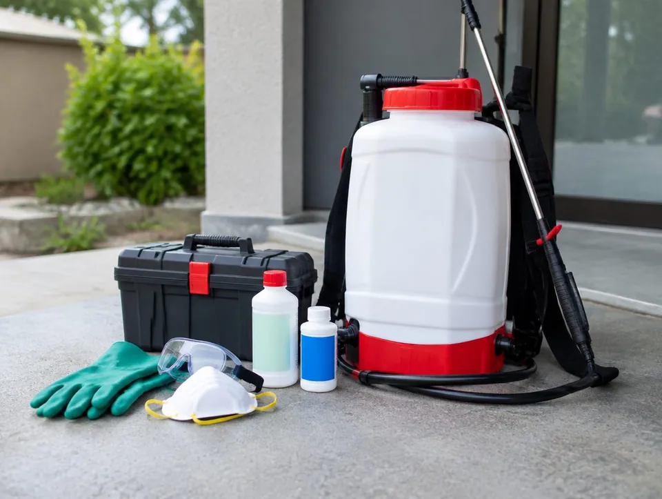
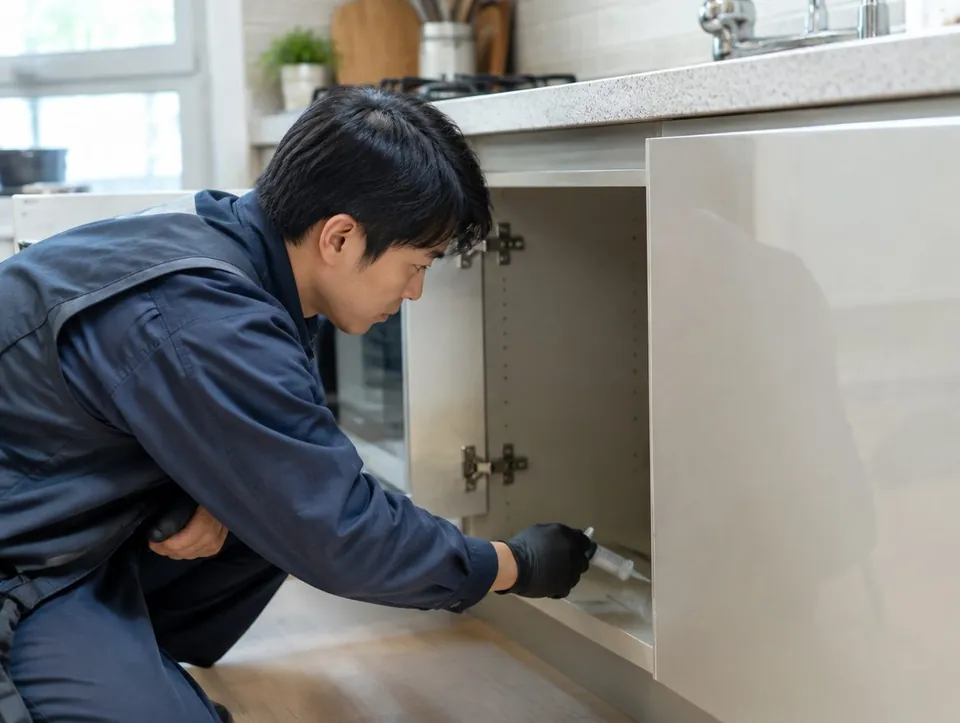

○○방역업체 A는 어떤 곳인가요?
○○방역업체 A는 부천시에서 해충 방역 · 소독 일을 하는 곳입니다. 부천 바퀴벌레 · 개미 · 쥐 방역과 식당 · 학원 정기 소독. 소독증명서 발급.
- 상호
- ○○방역업체 A
- 업종
- 해충 방역 · 소독
- 서비스 지역
- 부천 · 인천 부평 · 서울 구로
- 영업시간
- 평일 09:00 ~ 18:00
- 주소
- 부천시 00로 00
- 소독증명서 발급
- 반려동물 · 아이 있는 집 약제 안내
- 재발 시 1개월 안 무상 재처리
SERVICE
○○방역업체 A가 하는 일
부천 바퀴벌레 · 개미 · 쥐 방역과 식당 · 학원 정기 소독. 소독증명서 발급.
PROCESS
진행 순서
- 상담 · 증상 확인
- 현장 조사
- 방역 처리
- 재점검
PHOTO
현장 · 매장 사진
예시 사진입니다. 실제 사이트에는 사장님 매장 · 현장 사진이 들어갑니다.


FAQ
자주 묻는 질문
약 냄새가 나나요?
겔 · 미끼 위주로 처리해 냄새가 거의 없습니다. 분무가 필요한 경우 환기 시간을 안내드립니다.
한 번으로 끝나나요?
알이 남아 있어 2~3주 뒤 한 번 더 처리하는 것을 권합니다.
소독증명서가 필요해요.
법정 소독 대상 시설은 작업 후 소독증명서를 발급해 드립니다.
방역 상담
○○방역업체 A · 010-0000-0000